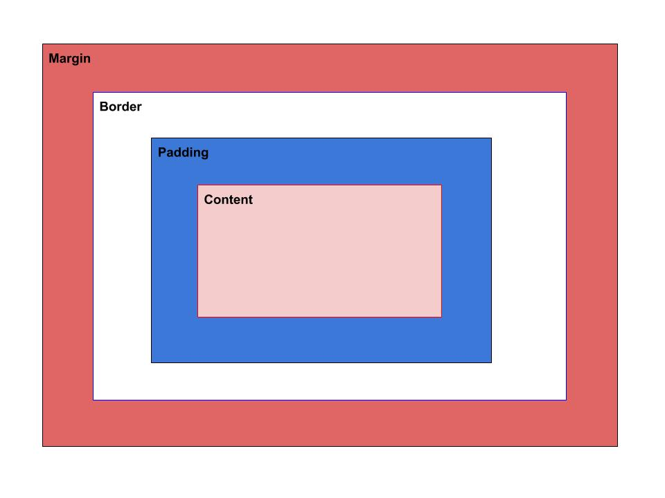

What is box model?
Box model describes as rectangular boxes. In css we use box model to define how these rectangular boxes take affect our browser. Also, we apply it with a different property so we moderate how size it is so, box model has different shape that depend on what you want. As it is boxes, we must have a border, padding, margin within width and height, indeed the content. To make it has an appropriate shape, we have to arrange each properties measure with calculation. We are not able to see the boxes unless we add a background-color.
Diagram
content-box
Content box is the area which you can put your text or textry. You also can add width and height in this area.
padding-box
Padding box is the area which you can control the property for example you want the text to close the border. We can apply it in the top,bottom, left and right.
border-box
Border box is the area which wraps the content and the padding boxes. You can style or decor the border with a size.
border
Border property sets the border area for an element.
margin
Margin property sets the four sides of an element and we can apply them in one element in a different way. There are the four side:
padding
Padding property sets the padding area of an element. It also sets on the four sides of an element as following:
display
Display property sets whether an element is treated as a block or inline element and the layout used for its children, such as flow layout, grid or flex. Formally, the display property sets an element's inner and outer display types, according to mdn
box-sizing
Box sizing property sets the size of the element box. If you want to use box-sizing you have to use width at least, it means that box-sizing is the total of width.
Two different boxes collide
When two differently sized margins of two different boxes collide, they collapse and combine together and the bigest takes the part.
box-sizing: box-border;
Formula=margin+2times of padding+content